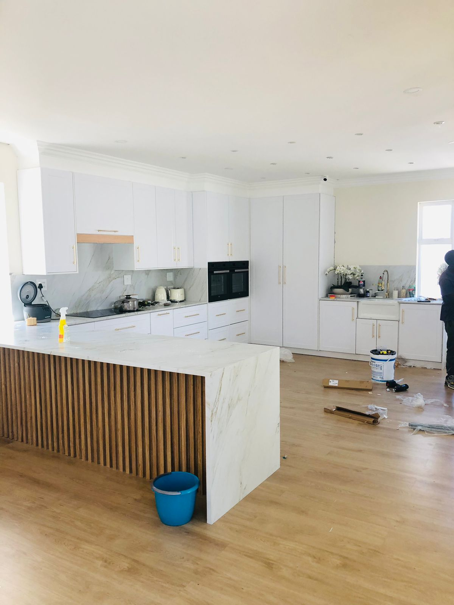
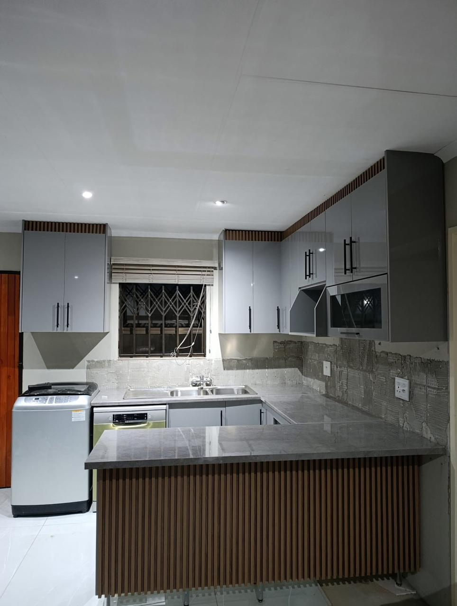
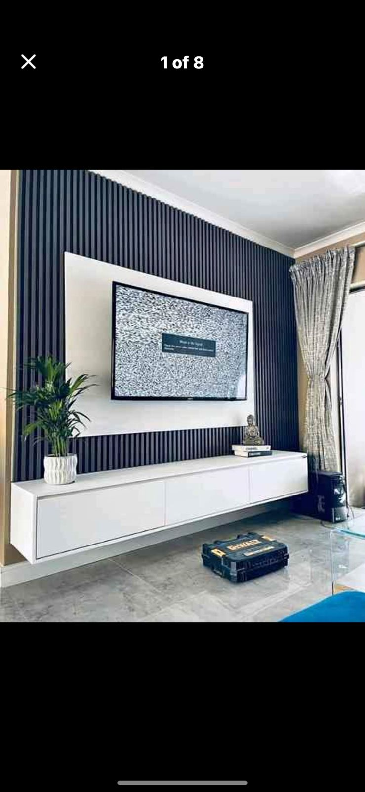

Our Services
We offer a range of custom carpentry services tailored to your home's specific needs. Take a look at some of our recent work below.
Kitchen Cabinets
Our specialty. We design and install custom kitchen cabinets that maximize space and are built to last. We work with you to choose the right materials and finishes for your budget.


Built-in Wardrobes
Say goodbye to clutter. We create beautiful, spacious built-in wardrobes that fit perfectly in your bedroom, utilizing every inch of available space.
TV Stands & Custom Pieces
Need a unique piece? We build custom TV stands, coffee tables, and other home items to match your specific style and space requirements.
